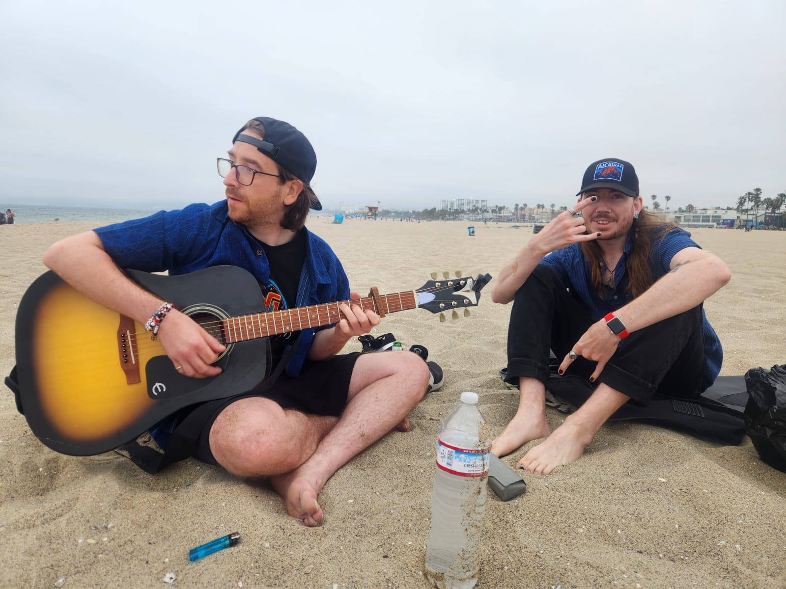
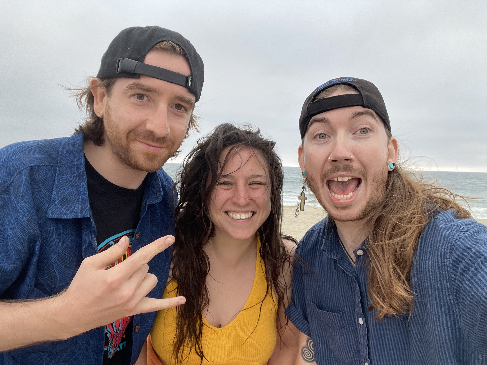

Mo Cairde i Venice
A leithéid de dheireadh seachtaine imeachtaí. Bhí mo chara Matt i Venice Beach le na chailín Emelee. Tá siad ina gcónaí i Vancouver agus shocraigh siad deireadh seachtaine a chaitheamh i Los Angeles. Deir siad nach bhfuil an eitilt ró-fhada, mar sin caithfidh mé cuairt a thabhairt orthu am éigin freisin. Bhí Alex i San Francisco don deireadh seachtaine ag freastal ar 21ú breithlá a nia. Tá an páiste fásta anois ina teaghlach. Bhí brón orm nach raibh mé in ann freastal ar an mbreithlá ach bhí sceitimíní orm freisin mo chara is fearr a fheiceáil, bhí 7 mbliana ann ó bhíomar le chéile go deireanach. Ar maidin Dé Sathairn, líon mé an umar gáis sa Subaru agus chuaigh mé as Fullerton go Venice Beach. Bheadh sé ina thuras uair an chloig ag brath ar thrácht. Ar an lámh eile, bhí a fhios agam go mbeadh sé deacair páirceáil a fháil.Tá rian curtha isteach agam don dúshlán GHOSTWAVE le Taetro agus níor chruthaigh mé ceol ó shin, ach tá mé ag obair go dian ar an teicneolaíocht ceoil agus ag baint taitnimh as mo shamhradh ar an trá.
Published on: